《现代操作系统（第四版）》读书笔记（第 1-3 章）
旧书清理系列。别人安利的“操作系统”类书籍，主要看 1-6 章对应的重点部分。
第 1 章 - 引论
- （Page：2）操作系统：
- 主要任务：
- 自顶向下：主要任务是“隐藏硬件”，如对 I/O 设备的抽象：底层硬件 -> 软件驱动（提供操作硬件的底层接口）-> 文件抽象（屏蔽底层接口的使用细节）；
- 自底向上：主要任务是管理一个复杂系统的各个部分，记录哪个程序在使用什么资源，对资源请求进行分配，评估使用代价，并且为不同程序和用户调解互相冲突的资源请求；
- 历史：
- 第一代（1945~1955）：真空管和穿孔卡片；
- 第二代（1955~1965）：晶体管和批处理系统（大型机）；
- 第三代（1965~1980）：集成电路和多道程序设计；
- 第四代（1980~至今）：个人计算机；
- 第五代（1990~至今）：移动计算机。
- 模式：
- 用户态：只能使用有限的 CPU 指令。通常无法使用 I/O 和内存保护相关的指令；
- 内核态：可以使用全部 CPU 指令和硬件功能。
- （Page：14）存储器：
（CSAPP 中讲过的内容不再记录）
- 高速缓存：
- L1：总是在 CPU 中，通常用来将已解码的指令调入 CPU 的执行引擎（可能会有第二个 L1 用来缓存频繁使用的数据字）；
- L2：用于存放近来使用过的若干兆字节的内存字。
- CMOS 存储器：易失性。耗电较少，通常用于保持当前时间和日期。
- （Page：17）设备驱动程序：专门与控制器对话，发出命令并接收响应的软件。
- 将驱动程序装入操作系统的途径：
- 将内核与驱动程序重新链接，然后重启系统（许多 Unix 系统以这种方式工作）；
- 在操作系统文件中设置一个入口，并通知该文件需要一个设备驱动程序，然后重启系统（Windows）；
- 操作系统在运行时接受新的驱动程序并将其安装好。
- 每个设备控制器都有少量用于通信的寄存器（可以被直接映射到操作系统的地址空间，或通过专门的 IN 和 OUT 指令访问），驱动程序会将必要的信息写入这些寄存器中。
- （Page：17）实现输入输出的三种方式：
- 忙等待：需要占据 CPU，CPU 一直轮询设备直到 I/O 操作完成；
- 中断：设备驱动程序在 I/O 操作完成时通过“中断”通知操作系统（异步）；
- 直接存储器访问（DMA）：可以控制在内存和某些控制器之间的位流，而无须持续的 CPU 干预（仍需通过“中断”通知 CPU 处理完成）。
- （Page：18）总线：ISA -> PCI -> PCIe；
- （Page：20）启动计算机的过程：
- 母版上的 BIOS 程序（底层 I/O 软件）->
- 检查安装的 RAM 数量，键盘和其他设备是否安装正常 ->
- 扫描 PCIe 和 PCI 总线并找出上面的所有设备 ->
- 扫描 CMOS 存储器中的设备清单决定启动设备 ->
- 启动设备上的第一个扇区（包含一个分区表检查程序）被读入内存并执行 ->
- 从活动分区读入第二个启动装载模块 ->
- 装载模块被读入操作系统，并启动 ->
- 操作系统询问 BIOS 相关设备信息，并启动相应进程。
- （Page：22）操作系统概念：
- 进程：
- 在许多系统中，与一个进程有关的所有信息，除了 VAS 内容外，均存放在操作系统的一张表中，即“进程表”。进程表是数组（或链表）结构，当前存在的每个进程均占用其中一项。所以一个进程包括：进程的 VAS，对应的进程项表。
- 进程可以接收“信号”（一般为软件模拟的硬件中断），并执行相应的信号处理程序；
- 系统管理器授权每个进程一个给定的 UID，表示启动该进程的用户。
- 地址空间：
- 多道程序：允许在内存中同时运行多个程序；
- 地址空间可能大于也可能小于机器的物理内存（部分装入主存，部分留在磁盘，并在需要时来回交换它们）。
- 文件：（提供对 I/O 的抽象）
- 块特殊文件：由可随机存取块组成的设备，如磁盘等（可以被
mount到当前文件系统中）； - 字符特殊文件：用于打印机、调制解调器和其他接收或输出字符流的设备。
- 管道：是一种“虚文件”，可连接两个进程。
- 块特殊文件：由可随机存取块组成的设备，如磁盘等（可以被
- 输入/输出：I/O 子系统，用于管理 I/O 设备；
- 保护：诸如“文件保护”等安全性问题；
- shell：终端与操作系统之间的接口。
- （Page：32）
brkused to be POSIX, but it was removed in POSIX 2001。 - （Page：34）
kill系统调用：向进程发送信号。若该进程准备好捕捉一个特定的信号，那么对应的信号处理程序会处理该信号。否则，信号到来时杀掉该进程（名字由来）。 - （Page：36）操作系统结构：
- 单体系统：整个操作系统在内核态以单一程序的方式运行（在一大块代码中包含所有操作系统功能）；
- 需要一个主程序，处理服务过程请求；
- 需要一套服务过程，用来执行系统调用；
- 需要一套实用过程，用来辅助服务过程。
- 层次式系统：上层软件在下一层软件的基础之上构建；
- 微内核：为实现高可靠性，将操作系统划分为小的、良好定义的模块，只有“微内核”运行在内核态，其余模块作为普通用户进程运行（包括硬件驱动程序）。比如 “MINIX 3”；
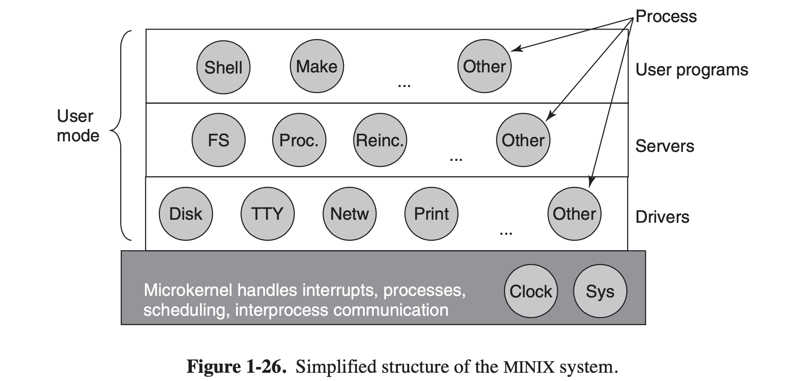
- 客户端-服务器模式：将进程分为两类，一类用来提供服务，一类使用服务；
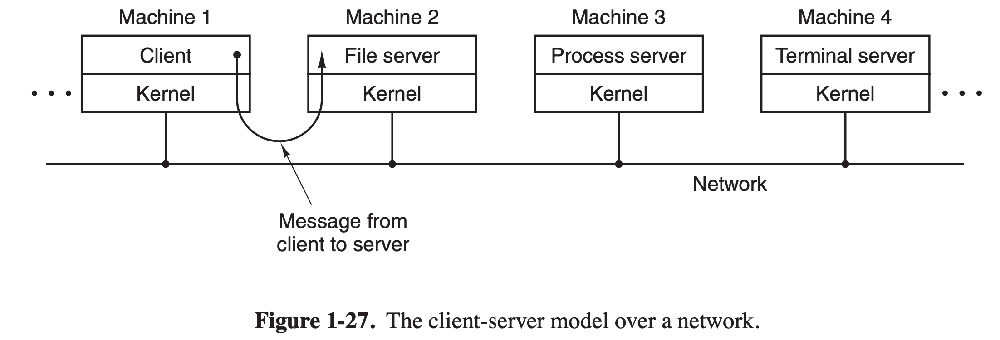
- 虚拟机；
- 外核：在内核态运行，为虚拟机分配资源，并检查使用这些资源的企图。
第 2 章 - 进程与线程
- （Page：48）进程模型：
- 在计算机中所有可运行的软件（通常包括操作系统），都被组织成若干“顺序进程”，简称“进程”；
- CPU 在各进程执行间快速切换，每次切换时都会更新唯一的物理 PC 的值到对应进程在内存的逻辑 PC 中。这种多个进程的并发执行被称为“多道程序设计”。
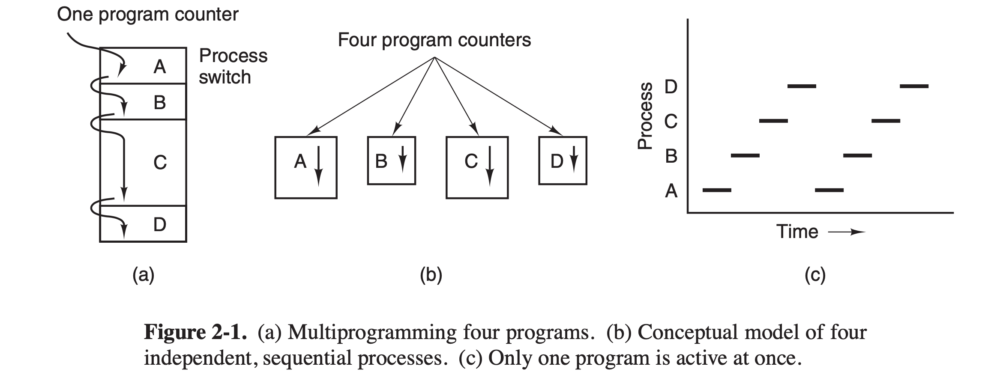
- （Page：50）进程的创建和终止：
- 进程创建：
- 新进程的创建都是通过一个已存在的进程执行了一个用于创建进程的系统调用实现的；
- Unix 中新进程的创建分为
fork与execve两步：可以在两者之间对子进程的文件描述符进行处理（如：对标准输入、输出、错误的重定向等）。父子进程的可写内存段是独立的，通过“写时复制”共享（保证修改的内存仅发生在私有地址空间）。
- 进程终止：
- 进程的终止通常由下列原因引起：
- 正常退出（自愿的）；
- 出错退出（自愿的）；
- 严重错误（非自愿）；
- 被其他进程杀死（非自愿）。
- （Page：52）进程的状态：
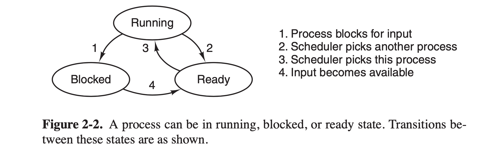
- 三种状态：
- 运行态（实际占用 CPU）；
- 就绪态（可运行，但因其他进程正在运行而暂停）；
- 阻塞态（等待某种外部事件发生才能运行）。
- 状态 2/3 的转换由“进程调度”引起。
- （Page：53）进程的实现：
- 操作系统维护着一张表（结构体数组），即“进程表”，其中每个进程占用一个表项，包含了进程的状态信息。大致总结如下：
| 进程管理 | 存储管理 | 文件管理 |
|---|---|---|
| 寄存器 | 正文段指针 | 根目录 |
| 程序计数器（PC） | 数据段指针 | 工作目录 |
| 程序状态字 | 堆栈段指针 | 文件描述符 |
| 堆栈指针 | 用户 ID | |
| 进程状态 | 组 ID | |
| 优先级 | ||
| 调度参数 | ||
| 进程 ID | ||
| 父进程 | ||
| 进程组 | ||
| 信号 | ||
| 进程开始时间 | ||
| 使用的 CPU 时间 | ||
| 子进程的 CPU 时间 | ||
| 下次定时器时间 |
- “中断向量表”中包含有中断服务程序的入口地址。中断处理和调度流程：
- 硬件压入堆栈当前进程的 PC；
- 硬件从中断向量装入新的 PC；
- 汇编过程保存寄存器值（通常保存到进程表项中）；
- 汇编过程设置新的堆栈；
- C 中断服务例程运行；
- 调度程序决定下一个将运行的进程；
- C 过程返回至汇编；
- 汇编过程开始运行新的当前进程。
- （Page：54）CPU 利用率：1 - p^n（p 为进程等待 I/O 操作的时间与其停留在内存中的时间之比；n 为内存中进程个数）。
- （Page：54）线程概述：
- 同一个进程下的线程共享地址空间；
| 进程中所有线程共享 | 每个线程独有 |
|---|---|
| 地址空间 | 程序计数器 |
| 全局变量 | 寄存器 |
| 打开文件 | 堆栈（存放调用栈帧） |
| 子进程 | 状态 |
| 即将发生的定时器 | |
| 信号与信号处理程序 | |
| 账户信息 |
- 在传统操作系统中，每个进程默认有一个地址空间和一个控制线程；
- 三种程序构造模式对比：
| 模型 | 特性 |
|---|---|
| 多线程 | 并行性、阻塞系统调用 |
| 单线程进程 | 无并行性、阻塞系统调用 |
| 有限状态机 | 并行性、非阻塞系统调用、中断 |
- 进程用于把资源集中到一起，线程则是在 CPU 上被调度执行的实体。线程试图实现的是，共享一组资源的多个线程的能力；
- 同一个进程中的线程是没有保护的，意味着一个线程可以读、写甚至清除另一个线程的堆栈；
- 和进程一样，线程可以处于若干状态中的一个：运行、阻塞、就绪或终止；
- 只在经常会发生线程阻塞的应用中使用多线程（比如 I/O 操作占比较高，CPU 密集型应用并不适用）。
- （Page：60）Posix 线程：
| 线程调用 | 描述 |
|---|---|
| pthread_create | 创建一个新线程 |
| pthread_exit | 结束调用的线程 |
| pthread_join | 等待一个特定线程的退出 |
| pthread_yield | 释放 CPU 来运行另一个线程 |
| pthread_attr_init | 创建并初始化一个线程的属性结构 |
| pthread_attr_destroy | 删除一个线程的属性结构 |
- （Page：61）线程实现：
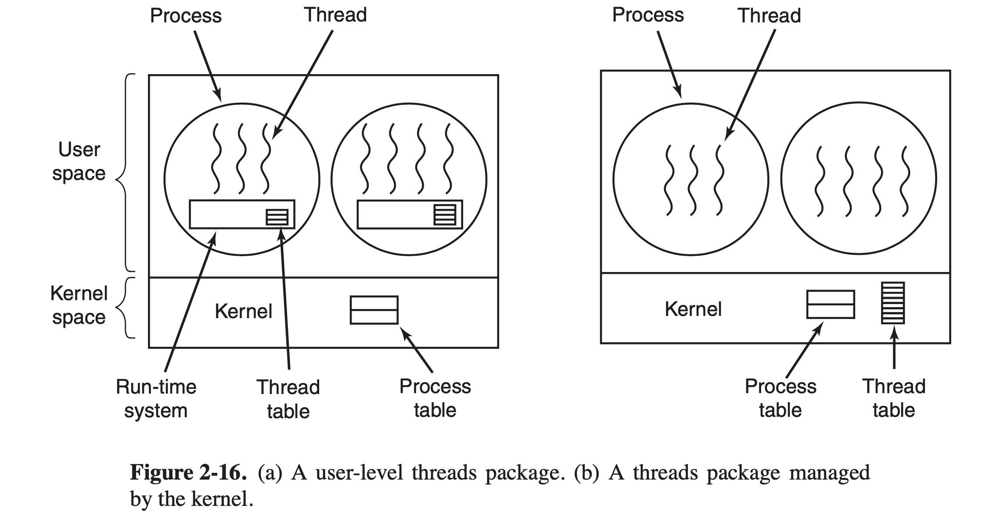
- 在用户空间中实现：
- 内核仍按照“单线程进程”的方式管理进程；
- 用户级线程可以在不支持线程的操作系统上实现。线程在一个运行时系统的上层运行，该运行时系统是一个管理线程的过程的集合。每个进程有其专用的“线程表”，由运行时系统管理，包含有线程相关信息；
- 不需要陷入内核，线程调度效率较高；
- 允许每个进程拥有自己定制的调度算法；
- 可借助类似
select的系统调用来模拟非阻塞系统调用（只在不会阻塞时实际调用）。
- 在内核中实现：
- “线程表”放置在内核中，记录所有线程的信息；
- 线程的创建、撤销效率相对较低。
- 混合实现：
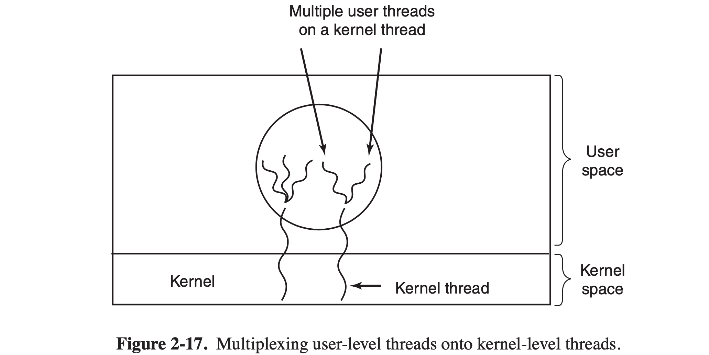
- 使用内核级线程，然后将用户级线程与某些或全部内核线程多路复用起来（多个用户线程对应一个内核线程）。
- （Page：64）调度程序激活（Scheduler Activation）：
- 模拟内核线程的功能，但为线程包提供在用户空间才能实现的更好的性能和灵活性；
- 内核给每个进程安排一定数量的虚拟处理器，并让用户空间运行时系统将线程分配到处理器上。当内核了解到一个线程被阻塞后，内核通知该进程的运行时系统，并在堆栈中以参数形式传递有问题的线程编号和所发生事情的一个描述。内核通过在一个已知的起始地址启动运行时系统，从而发出通知。一旦如此激活，运行时系统就重新调度其线程；
- 违反“分层次系统”设计原则（内核调用了上层运行时系统）。
- （Page：65）弹出式线程：
- 一个消息的到达导致系统创建一个处理该消息的线程；
- 线程之间彼此完全一致，且没有必须存储的寄存器、堆栈等，因此创建速度较快。
- （Page：67）进程间通信（IPC）：
- 竞争条件：两个或多个进程读写某些共享数据，而最后结果取决于进程运行的精确时序；
- 临界区（Critical Region）：对共享内存进行访问的程序片段（解决“竞争条件”的直接方法是，不能使多个进程同时处于临界区，因此可以使用“互斥”）；
- 实现互斥的几种方法：
- 屏蔽中断：在进程进入临界区后立即屏蔽所有中断，包括“时钟中断”。离开前再打开中断（不安全、多核并不友好）；
- 锁变量：在软件层，通过设置一个全局共享变量的不同值来代表是否有进程已进入了临界区（无济于事）；
- 严格轮换法：利用“自旋锁”让每个进程进行严格等待，以轮流进入临界区。缺点是：由于只有每个进程自身才能够修改锁的状态，导致处于临界区外运行的进程可能会阻碍其他进程。
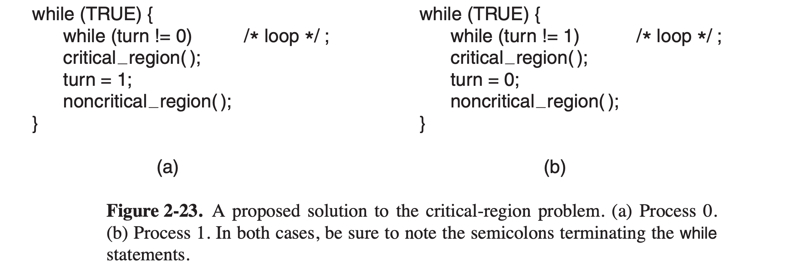
- Peterson 解法：如下图。进入临界区前调用 enter_region，退出前调用 leave_region（构造“忙等待”，会浪费 CPU）。
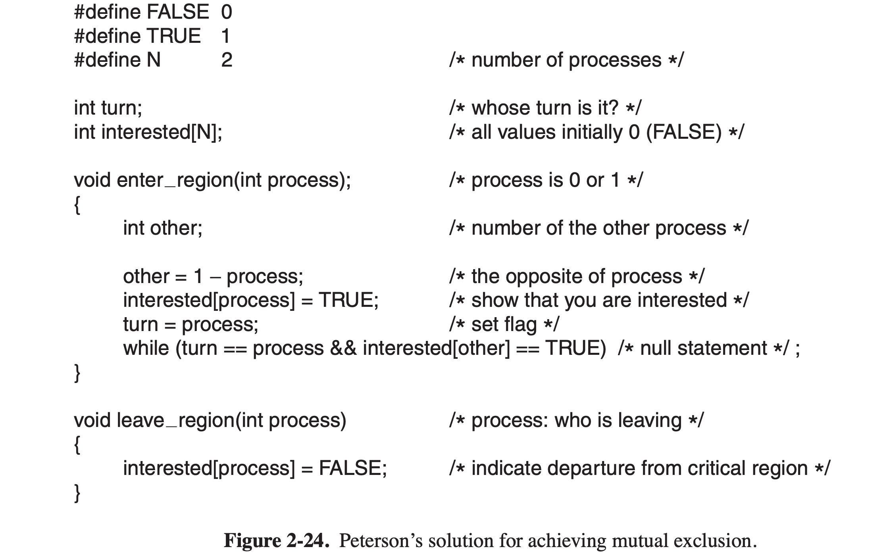
- TSL 指令：需硬件支持。利用
tsl（测试并加锁）指令，该指令可以原子读取并写某个内存位置（构造“忙等待”，会浪费 CPU）。也可以使用xchg原子交换指令来完成类似的操作。
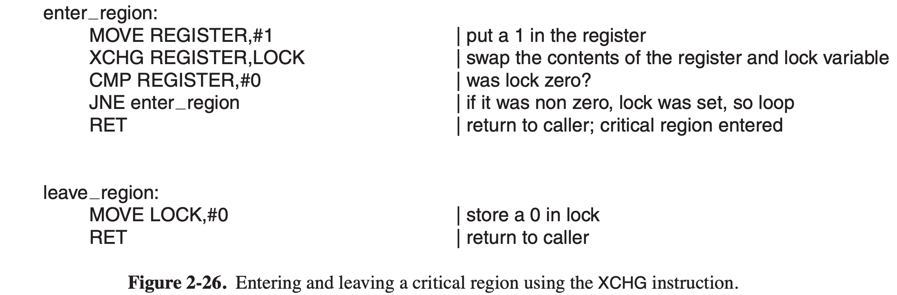
- 睡眠与唤醒：
- 借助 sleep / wakeup 原语来阻塞和唤醒进程（但需要借助“唤醒等待位”，无法从根本上解决问题）；
- 信号量（Semaphore）：
- 一种新的数据类型，可用来累计唤醒次数，供后续使用。一个初始值为 1 的互斥量称为“二元信号量”，意味着同一时刻只能允许 1 个进程执行；
- 对信号量为 0 的进程执行 down 操作，进程会陷入睡眠；对睡眠的进程执行 up 操作，信号量不会发生变化，但进程会苏醒。整个过程是原子的；
- 实现互斥：每个进程在进入临界区时使互斥量减一，退出临界区时使互斥量加一。
- 互斥量：
- 一个可以处于两个状态之一的变量（解锁/加锁）；
- 当一个线程（进程）需要访问临界区时，它调用
pthread_mutex_lock，如果此时互斥量是解锁的，则调用成功，可以进入。否则，调用线程（进程）被阻塞，直到在临界区的线程（进程）完成并调用pthread_mutex_unlock。如果多个线程（进程）被阻塞在该互斥量上，将随机选择一个并允许它获得锁。
- 管程：
- 一种高级同步原语，是编程语言的组成部分（比如 Java）。是一个由过程、变量及数据结构等组成的一个集合，它们组成一个特殊的模块或软件包。进程可以调用管程中的过程，但不能在管程之外声明的函数中直接访问管程内的数据结构；
- 任一时刻管程中只能有一个活跃进程，进入管程时的“互斥”由编译器负责。进程之间的运行条件转移可以通过“条件变量”原语（
signal与wait）来实现。
- 消息传递：
- 一般用于远程进程通信；
- 使用
send与receive系统调用。
- 屏障：
- 用于“进程组”的同步。
- （Page：83）避免锁：读-复制-更新：将更新过程中的移除和再分配过程分离。
- （Page：84）调度：
- CPU 密集型 VS I/O 密集型：
- 如果是“I/O 密集型”进程，则应该让其尽快得到机会，以便发出磁盘请求并保持磁盘始终忙碌。
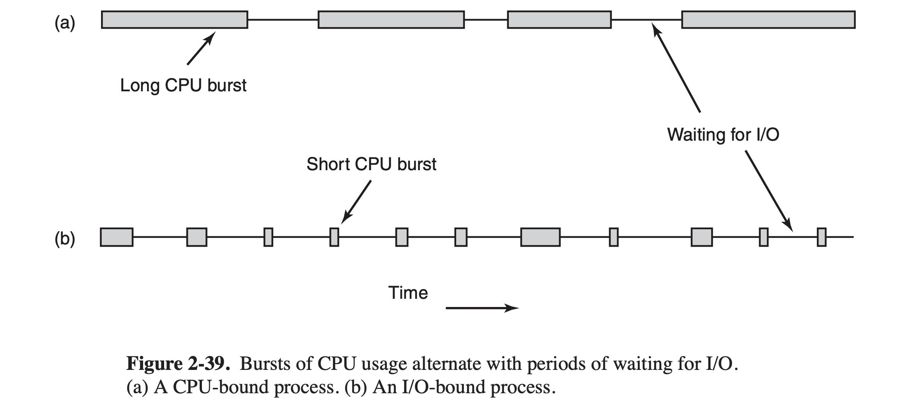
- 调度算法种类：
- 非抢占式算法：挑选一个进程，然后让该进程运行直至被阻塞，或直到该进程自动释放 CPU；
- 抢占式算法：挑选一个进程，并让该进程运行某个固定时段的最大值，超时后则挂起（通过时钟中断），然后挑选另一个进程运行。
- 批处理系统中的调度：
- 先来先服务：按进程请求 CPU 的顺序使用 CPU。当一个进程被阻塞时，会从“就绪队列”中取出下一个进程接着运行。而当被阻塞进程变为就绪时，重新排放到末尾；
- 最短作业优先：将运行时间最短的作业排在前面。适用于可预知运行时间的作业；
- 最短剩余时间优先：“最短作业优先”的抢占式版本。调度程序总是选择剩余运行时间最短（包括新到达的作业）的那个进程运行。
- 交互式系统中的调度：
- 轮转调度：每个进程被分配一个时间片，允许该进程在该时间段内运行。超时则剥夺 CPU 并分配给另一个进程，当前进程被移动到队列（可运行进程表）末尾。若进程在时间片结束前阻塞或结束，则 CPU 立即进行切换。总结：时间片设置太短会导致过多的进程切换，降低 CPU 效率；设置太长又可能因引起对短交互请求的响应时间变长。通常设置为 20~50ms 是一个比较合理的折中；
- 优先级调度：每个进程被赋予一个优先级，允许优先级最高的可运行进程先运行。可以选择将一组进程按优先级分为若干类，并在各类之间采用优先级调度，各类进程内部采用轮转调度。对于 I/O 密集型进程，可以将其优先级设置为 1/f，f 为该进程在上一时间片中所占的部分（比例）。
- 多级队列：设计优先级类，属于最高优先级类的进程运行一个时间片，次优先级类的进程运行 2 个时间片，再次一级运行 4 个时间片，以此类推。当一个进程用完分配的时间片后，被移动到下一类；
- 最短进程优先：优先执行估计运行时间最短的进程。进程的运行时间可以根据过过去的行为进行推测（老化）；
- 保证调度：向用户做出明确的性能保证（比如每个进程平均使用 CPU），然后实现；
- 彩票调度：为进程提供各种系统资源（如 CPU 时间）的“彩票”，一旦要做出一项调度决策时，就随机抽出一张彩票，拥有该彩票的进程获得该资源。按照优先级，优先级越高的进程，发的“彩票”越多。每个时间片进行一次“抽奖”，抽到哪个进程就运行哪个进程（按照数学期望计算，随着“抽奖次数增加”，低优先级的进程也同样会被执行。但如何实际分配初始的彩票数量没有较好的解决方案）。
- 公平分享调度：考虑用户。每个用户会分配到 CPU 时间片的一部分（或平均、或某种比例），而调度程序以一种强制的方式选择进程。
第 3 章 - 内存管理
- （Page：103）早期组织内存的三种方案：一个时刻只能有一个进程运行。
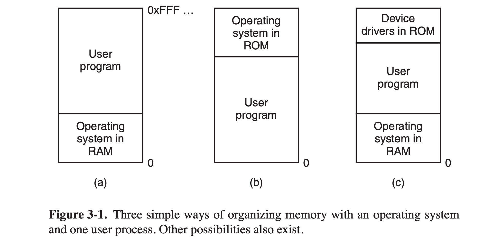
- 操作系统位于低地址的 RAM 中（大型机和小型计算机）；
- 操作系统位于高地址的 ROM 中（掌上电脑和嵌入式系统）；
- 操作系统位于低地址的 RAM，设备驱动程序位于高地址的 ROM（早期的个人计算机）。在 ROM 中的系统部分称为 BIOS。
- （Page：106）两种解决内存超载的方法：
- 交换：
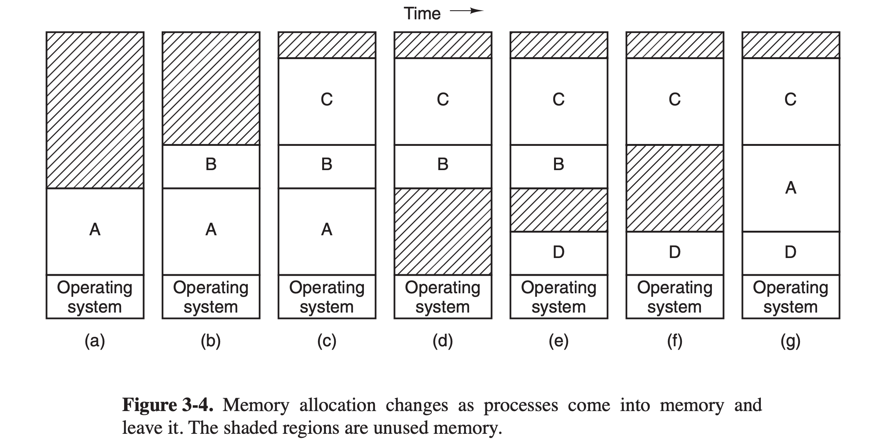
- 进程被完整地换入和换出；
- 产生的内存空洞可以通过“内存紧缩”技术进行合并（需要耗费大量 CPU 时间）；
- 需要为可能增长的堆栈和数据段提前预留空间。
- 虚拟内存：
- 每个程序拥有自己的地址空间，这个空间被分割为多个块，每个块称为一个“页”。每一页有连续的地址范围，并被映射到物理内存。当程序引用到一部分在物理内存中的地址空间时，由硬件执行必要的映射。若引用部分不在物理内存中，则由操作系统负责将缺失的部分装入内存并重新执行失败的指令；
- 虚拟地址 -> MMU ->（地址总线）-> 物理内存；
- 页表项（PTE）基本结构：
- 保护位：指出一个页允许什么类型的访问（读/写/执行）；
- 修改位：该页内容是否被修改（方便写回）；
- 访问位：表示页面已被访问（用于“页面置换算法”）；
- 高速缓存禁止位：禁止该页面被高速缓存。
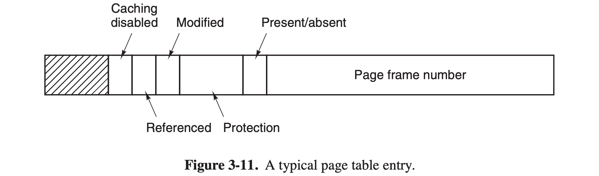
- 页面对应的磁盘地址不是页表项的组成部分。页表只保存有 MMU 硬件需要的信息，而操作系统在处理“缺页中断”时需要把页面的磁盘地址等信息保存在操作系统内部的数据结构中。
- （Page：107）空闲内存管理算法：
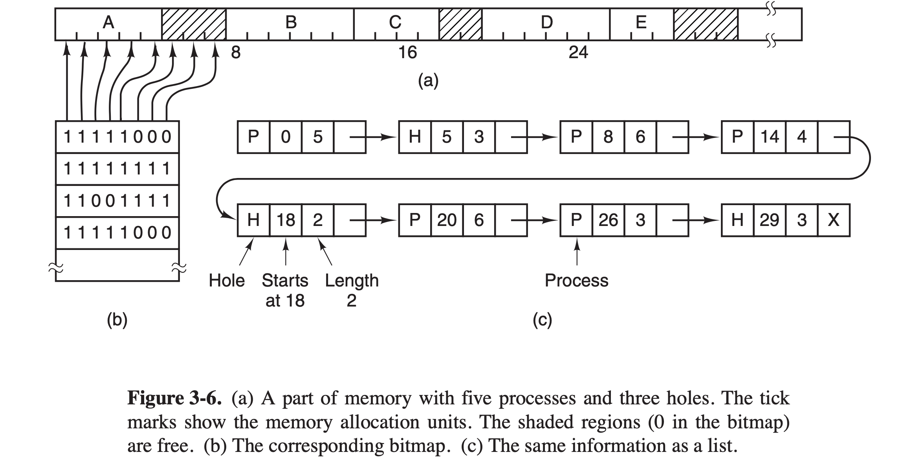
- 位图：
- 内存被划分为几个字到几千字节的“分配单元”，每个单元对应于位图中的一个位，0 表示空闲，1 表示占用（或者相反）；
- 在最后一个分配单元可能会有内存浪费；
- 缺点：查找位图中指定长度的连续 0 串（连续的可用空间）可能很耗时。
- 空闲链表：
- 维护一个记录已分配内存段和空闲内存段的链表，其中每个节点包含以下域：
- 空闲/占用标志位；
- 起始地址；
- 长度；
- 指向下一节点的指针。
- 可以使用双向链表优化节点查找速度；
- 可以为空闲块和已使用块分配独立的链表，但会增加复杂度，并且使内存释放的“重整”过程变慢。对于空闲区甚至可以“不用单独的链表”，直接在每个空闲区块的“头部”保存信息，然后所有空闲区块（in-place）形成链表；
- 常用分配策略：
- 首次适配：沿着链表搜索，直到找到一个足够大的空闲区进行使用（速度快）；
- 下次适配：同“首次适配”类似，但每次找到空闲区域后，下次搜索将从直接该位置开始（性能略低）；
- 最佳适配：搜索整个链表，找出能够适配所需空间的最小空闲节点（速度慢、且产生的空闲碎片会浪费更多内存）；
- 最差适配：总是分配最大的可用空闲块；
- 快速适配：为常用大小的空闲区维护单独的链表。
- （Page：113）加速分页过程：
- 虚拟地址到物理地址的快速转换：
- 转换检测缓冲区（TLB）：基于“大多数程序总是对少量页面进行多次访问”的观察，可以提供一个小型硬件设备，将虚拟地址直接映射到物理地址，而不必再访问页表。通常被放置在 MMU 中。
- TLB 命中：虚拟地址 -> MMU -> TLB -> 物理地址；
- TLB 击穿：虚拟地址 -> MMU -> 页表 -> TLB（淘汰一个表项并更新。修改位写回到内存中的页表项，访问位置位）-> 物理地址。
- TLB 软失效：访问页面在内存中而不在 TLB 中；
- TLB 硬失效：访问页面不在内存中也不在 TLB 中（需要从磁盘装入）；
- 次要缺页错误：访问页面在内存中，但并未记录在页表中（已由其他进程调入）；
- 严重缺页错误：需要从硬盘载入页面到内存；
- 段错误：引用了非法地址。
- 支持大型虚拟地址空间：
- 多级页表：
- 可以避免把全部页表一直保存在内存中（仅需顶级页表）；
- 顶级页表的表项中含有次级页表的地址或页框号（物理内存中对应的单元）。
- 倒排页表：
- 存储的是有关每个物理页框的信息，倒排页表项与物理内存页框有一一对应关系，它所包含的表项数量较少（物理内存大小一般远小于虚拟内存大小）；
- 可以直接通过 (进程 ID, 虚拟页号) 对来查找对应的物理页号；
- 可以通过增加“哈希表”（对进程 ID 与虚拟页号进行哈希）的方式来加速表项的查找过程。产生冲突可以用“链地址法”解决。
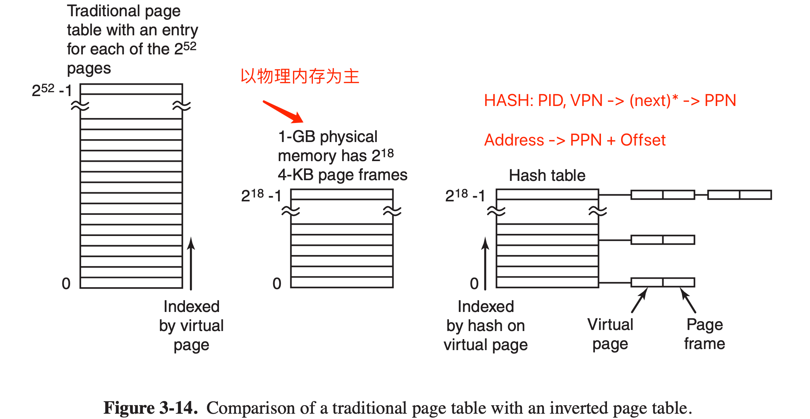
- （Page：117）页面置换算法：
- 最优页面置换算法：
置换出很（最）久之后才会用到的页面（无法实现）。
- 最近未使用页面置换算法（NRU，Not Recently Used）：
在最近一个时钟滴答中，淘汰一个没有被访问的（R 位为 0）已修改（M 位为 1）的页面较好。初始时，R 位与 M 位均为 0，一旦任何一个页面引起缺页中断时（被访问），R 位会被置位，且 R 位会在每次时钟中断时清零（周期内）。M 位会在页面修改后置位。
- 先进先出页面置换算法（FIFO）：
维护一个所有当前在内存中的页面的链表，最新进入的放在表尾，最早进入的放在表头。当发生缺页中断时，淘汰表头的页面，并将新调入的页面放在表尾（可能会淘汰常用页面）。
- 第二次机会页面置换算法：
上述算法的改进。淘汰时检查最老页面的 R 位，如果为 0（最近没有使用），可以立刻置换；否则，清零该位并把页面放到链表的尾端。
- 时钟页面置换算法：
上述算法的改进。将所有页面都保存在一个环形链表中，一个指针指向最老的页面。当发生缺页时，算法首先检查指针指向的页面，如果 R 位为 0 就淘汰该页面，并把新页面插入这个位置，然后指针前进。否则清零 R 位，指针前进（省去了将页面移动到链表尾端的步骤）。
- 最近最少使用页面置换算法（LRU，Least Recently Used）：
基于一个观察：在前面几条指令中频繁使用的页面很可能在后面的几条指令中被使用。
在缺页中断时，置换未使用时间最长的页面。内存中维护一个所有页面的链表，最近最多使用的在表头，最近最少使用的在表尾。每次访问内存时都必须更新整个链表。在链表中找到一个页面，删除它，然后把它移动到表头。实现成本较高，一般需要硬件支持。
- 优化的最不常使用置换算法（NFU，Not Frequently Used）（较好）：
将每个页面与一个软件计数器（一般 8 位够用）相关联，计数器初值为 0，每次时钟中断时，由操作系统扫描内存中的所有页面，将每个页面的的计数器值右移一位，然后将该页面的 R 位加到计数器最左端的位（老化）。
发生缺页中断时，将置换计数器值最小的页面。
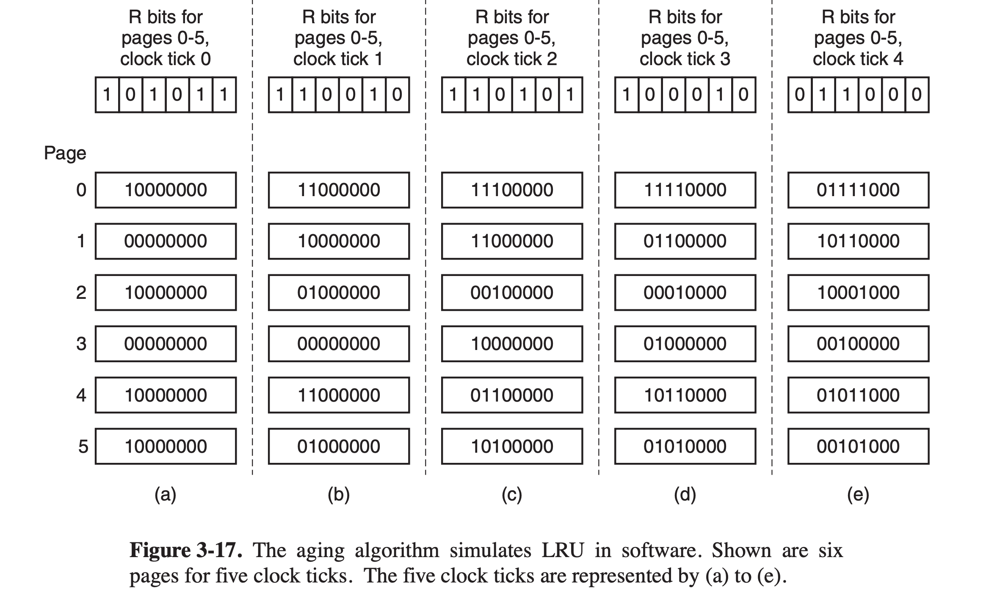
- 工作集页面置换算法：
工作集模型：在让进程运行以前，确保它的工作集就已经在内存中（预先调页），从而减少缺页中断率。
该算法在发生缺页中断时，淘汰一个不在工作集中的页面。工作集可以被定义为过去 10ms 中的内存访问所用到的页面集合。算法执行如下图所示：
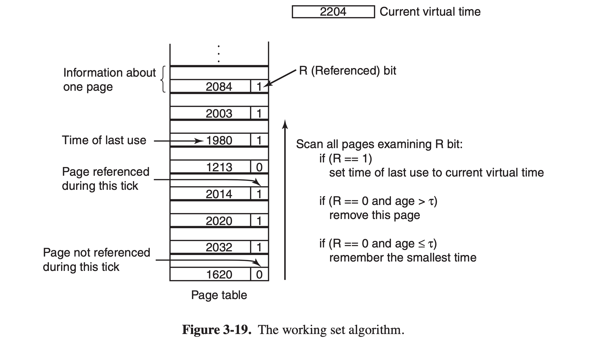
- 若所有页面的生存时间都在特定时间内，则选择时间最长的淘汰；
- 最坏情况下，所有页面都被访问过，则随机淘汰。
- 工作集时钟页面置换算法（较好）：
上述算法的改进。构建一个循环表，当装入第一个页面后，把它加到该表中。随着更多的页加入，它们形成一个环。每个表项包含来自基本工作集算法的上次使用时间、R 位和 M 位。
每次缺页时，首先检查指针指向的页面。如果 R 位被置 1，该页面在当前时钟滴答中被使用过，那么该页不适合被淘汰。然后把该页 R 位置零，指针指向下一个页面，并重复该算法。否则，如果页面生成时间大于特定值且 M 位为零，则可以将此页面替换掉。
- （Page：125）分页系统设计问题：
- 局部分配策略于全局分配策略：
- 可以按照进程大小的比例来为进程分配相应数目的页面，并同时为每个进程规定一个最小页框数；
- 局部：只选择替换内存中属于当前进程的页；
- 全局：选择内存中所有的页进行替换，不区分是哪个进程（较“局部”算法更好）。
- 负载控制：
- 可以将进程交换到磁盘，并释放其所占有的页面来减轻内存压力；
- 在决定交互出哪个进程时要考虑：进程大小、分页率、CPU 密集型还是 I/O 密集型等。
- 页面大小：
- 常见的为 4KB 或 8KB；
- 小页面：
- 产生的内部碎片少；
- 在支持小型进程时浪费内存少；
- 可充分利用 TLB 空间；
- 需要更大的页表，花费在磁盘传输上的时间变多。
- 大页面：
- 产生的页表较小；
- 不会占用过多的 TBL 空间。
- 分离的指令空间与数据空间：
为指令（I 空间）和数据（D 空间）设置分离的地址空间，两者拥有各自独立的页表。链接器需要对数据/代码进行重定向。
- 共享页面：
- 需要注意当共享的两个进程中，某一个退出时，需要检查该进程所有的页面是否被其他进程共享。而对于正在共享的页面，不能够被释放；
- 只读的页面可以共享，数据页面不能共享。
- 共享库：
（之前书中讨论过太多次，略）
- 内存映射文件：
共享库的通用机制。进程可以通过发起一个系统调用，将一个文件映射到其虚拟地址空间的一部分。映射时不会实际读入页面内容，而是在访问时按“页”读入，磁盘文件被当做后备存储。当进程退出或解除文件映射时，改动被写回磁盘。
可用于进程间通信：一个进程在共享内存上写，另一个进程执行读。
- 清除策略：
增加“分页守护进程”，定期唤醒以检查内存状态。如果空闲页框过少，该进程通过预定的页面置换算法选择页面换出内存。如果页面被修改过，则将其写回。
一种实现方式是使用“双指针时钟”，前指针由分页守护进程控制，后指针用于页面置换。
- 虚拟内存接口：
提供可以直接“操作”虚拟内存的接口，诸如 mmap 等。命名虚拟内存可用于多个进程间的通信。
- （Page：131）有关实现的问题：
- 分页工作时期：
- 进程创建时：需要确定程序和数据初始大小，并为它们创建一个页表。同时在内存中为页表分配空间并初始化。进程被换出时，页表不需要驻留在内存中。操作系统需要在磁盘交换区中分配空间，以便进程换出时进行放置。操作系统需要把有关页表和磁盘交换区的信息存储在进程表中；
- 进程执行时：调度进程执行时，需要为新进程重置 MMU，刷新 TLB。新进程的页表成为当前页表；
- 缺页中断时：操作系统通过读硬件寄存器来确定是哪个虚拟地址造成了缺页中断。通过该信息，操作系统需要计算需要哪个页面，并在磁盘上进行定位。然后置换老的页面，所需页面读入页框（物理页面）。最后，回退 PC，使程序计数器指向引起缺页中断的指令，并重新执行该指令；
- 进程终止时：操作系统释放该进程的页表、页面和页面在磁盘上占用的空间。注意对进程间共享页面的特殊处理。
- 缺页中断处理：
- 硬件陷入内核，在堆栈中保存程序计数器（引起中断的指令信息）；
- 启动一个汇编代码例程保存通用寄存器和其他易失信息。例程调用传递到操作系统；
- 操作系统尝试发现需要哪个虚拟页面（通过硬件寄存器获得，或者分析引起中断的指令）；
- 检查地址是否有效，并检查存取与保护是否一致。不一致则向进程发出一个信号或杀死该进程。否则，检查是否有空闲页框，若没有，则通过页面置换算法寻找一个页面进行淘汰；
- 如果选择的页面被修改过，则写回。并发生一次上下文切换，挂起产生缺页中断的进程，直到磁盘传输结束。此时该页框需要被标记为“亡”，以免被其他进程使用；
- 页框“干净”后，操作系统查找所需页面在磁盘上的地址，并将其装入。装入过程中，进程仍然被挂起；
- 磁盘中断发生时，表明页已被装入，页表已经更新可以反映它的位置，页框也被标记为正常；
- 恢复发生缺页中断指令以前的状态，PC 重新指向这条指令；
- 调度引发缺页中断的进程，操作系统返回调用它的汇编例程；
- 例程恢复寄存器和其他状态信息，返回用户空间继续执行。
- 指令备份：
通过引发“缺页中断”的地址无法快速简单地找到当前正在执行的对应指令（无法确定页面内容上放置的是操作码还是操作数）。某些计算机上，CPU 会通过一个隐藏的内部寄存器来在每条指令执行之前，将 PC 的内容复制到给寄存器。
- 锁住内存中的页面：
锁住正在进行 I/O 操作的内存中的页面，防止全局页面置换算法在调度其他进程时，将正在执行 I/O 操作的其他进程的页面换出。或者选择在内核缓冲区中完成所有 I/O 操作，然后再将数据复制到用户页面。
- 后备存储：
在磁盘上设置特殊的交换分区以存放换出的页面。系统启动时，交换分区为空。第一个进程启动时，留出与该进程一样大的交换区块。新进程启动后，同样分配与其核心映像同等大小的交换分区。进程结束后，释放交换区。
进程表中需要记录进程交换区的磁盘地址。写回页面时，写回地址可以由“虚拟地址空间中的页面偏移量加到交换区开始地址”得到。
交换区的初始化可以通过将整个进程映像复制到交换区实现（代码段可以映射到源文件）。或者单纯在页面换出时为其分配磁盘空间，换入时再回收（需要每个进程维护一张表，记录页面在磁盘上的位置）。
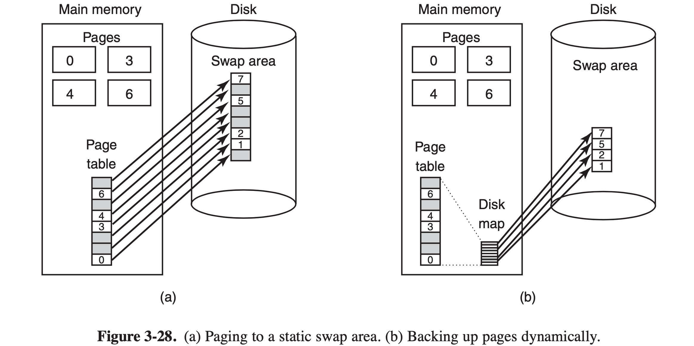
- 策略和机制的分离：
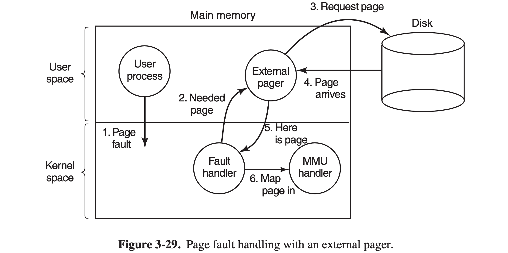
- 底层 MMU 处理程序（代码机器相关）；
- 作为内核一部分的缺页中断处理程序（代码机器无关）；
- 运行在用户控件的外部页面调度程序。
进程运行，出现缺页中断。缺页中断处理程序找出需要哪个虚拟页面，并发送一条消息给外部页面调度程序。调度程序从磁盘中读入所需页面，并复制到自己地址空间的某一位置。然后告诉缺页中断处理程序该页面的位置。该程序从外部页面调度程序的地址空间中清除对该页面的映射，然后请求 MMU 处理程序把它放到用户地址空间的正确位置。（页面置换算法可以放到外部页面调度程序或内核的缺页中断处理程序中）
- （Page：134）分段：
为了使程序和数据可以被划分为逻辑上独立的地址空间，并且有助于共享和保护。
- “段”为相互独立的地址空间，每个段由一个从 0 到最大的线性地址序列构成。其长度可以在运行期间动态改变。
- 在“段”中指示一个地址，需要“段号”和“段内地址”；
- 可简化对“长度经常变动”的数据结构的管理；
- 共享库通常会被放到单独的段中由各个进程共享；
- 自从 X86-64 起，分段机制已被认为是过时的且不再被支持。